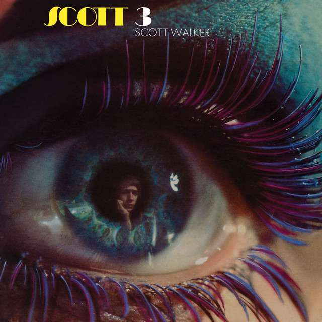

Scott Walker - Scott 3



Información del álbum facilitada por discogs.com:
Fecha de lanzamiento: 1969
Géneros: Pop
Estilos: Vocal, Baroque Pop, Chanson
Pais: UK
Votos: Media de 4.19 con 21 votos
Sello: RROOPP
Distributed By: Cargo (2)
Copyright (c): RROOPP
Copyright (c): Jon Attwood
Made By: MPO
Made By: CMCS Print & Colour Ltd.
Design - 300 Million
Design - Ali Whitehead
Design - Jon Attwood
Liner Notes - Jack Trevillion
Written-By, Recorded By, Producer [Produced By], Mixed By, Mastered By - Jon Attwood
Tracklist:
A1. It’s Raining Today (feat. Scott Engel)
A2. Copenhagen (feat. Scott Engel)
A3. Rosemary (feat. Scott Engel)
A4. Big Louise (feat. Scott Engel)
A5. We Came Through (feat. Scott Engel)
A6. Butterfly (feat. Scott Engel)
A7. Two Ragged Soldiers (feat. Scott Engel)
B1. 30 Century Man (feat. Scott Engel)
B2. Winter Night (feat. Scott Engel)
B3. Two Weeks Since You’ve Gone (feat. Scott Engel)
B4. Sons Of (feat. Gérard Jouannest & Jacques Brel & Mort Shuman)
B5. Funeral Tango (feat. Gérard Jouannest & Jacques Brel & Mort Shuman)
B6. If You Go Away (feat. Jacques Brel & Rod McKuen)